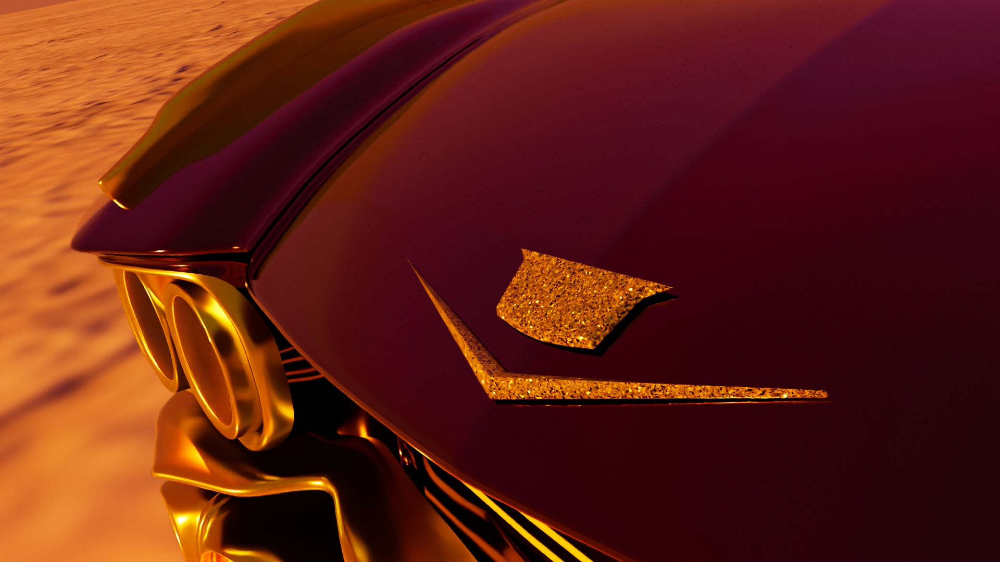
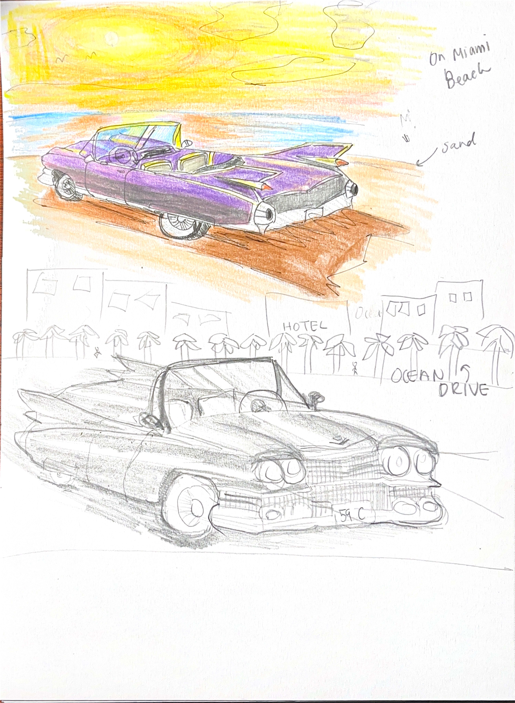
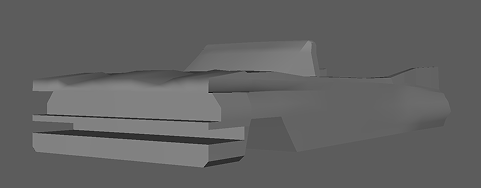
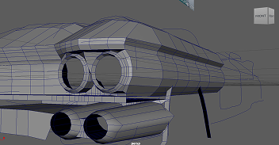
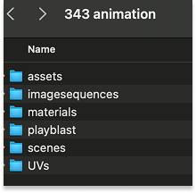
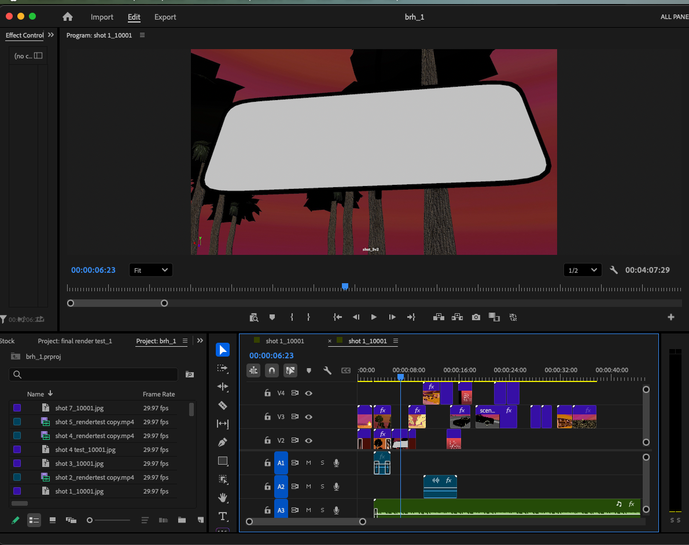

Description
The project is a cinematic of a car driving by the beach. It was designed to create a
dreamlike atmosphere with a natural landscape and saturated stylized lighting. I focused
on hard-surface modelling techniques to make the car accurate to the original, but still
adding my own personal touch, while creating a simple but believable atmosphere. I used
exaggerated lighting of a sunset to make a kind of stylized realism. The stylized lighting
of the sunset tones also supports the dream-like feel of the piece. This animation is
focused more on atmosphere, rather than narrative.
Role: Concept Artist, Modeller, Texture Artist, Rig Artist, Editor
Duration: 3 months

Pre-production
While planning my concept, I wanted to create something visually bold and cinematic, inspired by GTA-style trailers and the aesthetic of Scarface (1983).
I began by producing sketches and a storyboard based on my references. Drawing inspiration from Scarface and GTA trailer visuals, I intentionally selected a car that embodied excess and status, incorporating exaggerated features such as a tiger-print interior, dramatic tail wings, and heavy chrome detailing to amplify the flamboyant, larger-than-life style.
The final concept successfully captured the extravagant and cinematic tone I was aiming for, clearly communicating my inspiration while creating a visually distinctive and cohesive design.


Modelling
After my pre-production, I moved onto the production stages. I started with modelling the car. Since the car was the star of the show, I spent a lot of time studying references and finding good blueprints for an accurate model. However, many problems arose that I did not expect.
After finding the blueprints, I realized that they do not accurately represent the car since there are a lot of things that remain unclear like where certain body lines start and end.
For example, in Figure 1, there is no indication of where the fall off from the hood curves into the side of the hood, compared to Figure 2, that shows the line that connects the hood to the side of the body. In Figure 3, I made sure to indicate the line in my model.
To get an accurate model, I had to study references extensively so I could have an accurate image of the car in my mind.
After finding the blueprints, I realized that they do not accurately represent the car since there are a lot of things that remain unclear like where certain body lines start and end. To fix this, I learned planar modelling and combining primitive shapes. Planar modelling was good for making controlled curves that follow the shape of the car accurately. I also utilized primitive shapes for areas like the headlights then combined it to the overall mesh (Figure 5).


I encountered severe non-manifold geometry issues that prevented my UVs from generating. The messy topology came from early modelling mistakes, like careless extrusions and leftover floating vertices.
I used Maya’s Mesh Cleanup tool to locate problem areas and manually fixed each issue by removing unnecessary vertices, merging edges, and reorganizing the mesh. I also researched solutions through tutorials and online sources.
After a long but successful cleanup process, I created a workable, manifold model ready for UV mapping then texturing—and learned the importance of clean, intentional topology.
Texturing
After modelling, I moved onto texturing. To prepare for texturing, I had to UV map the car since it consists of multiple different materials: chrome, car paint, glass, headlight plastic, number plate, grills, and glitter. The car is a complex shape, so I detached then separated the components with similar materials into one group. Separating and detaching the components helped with UV unwrapping and selecting portions of the car that are of similar materiality. I also used Hypershade to create my desired materials, utilizing the Arnold shaders for realistic rendering. For custom textures, like the car interior and number plates, I created them in Photoshop to make exactly what I wanted.
For the palm tree, I used a transparent texture so the leaves look realistic, but in reality it is only a curved plane (Figure 6).
The final result was a realistically textured tree and car, ready for animating!

Rigging
To prepare for animating the scenes, I needed to create realistic movement for the car model.
My goal was to set up the car in a way that would make the animation process efficient and keep the model clean and organized.
Since I am still developing my understanding of rigging, I followed a tutorial video to create a rig for the car. I then used the main control to animate the movement, adding a subtle bobbing motion as the car moved to make it look more realistic.
The rig made the animation process much easier because I did not have to move the car model directly. This kept the model intact, organized, and allowed for smoother workflow during animation.
Animating
After rigging the car, I moved onto animating.
I learned to utilize keyframes, timing, and cinematography for all the scenes. Keyframes were useful because I could set my most drastic frames first, and then scale the distance between the frames depending on the speed of the scene. For the cinematography, I made sure my camera movements were smooth via Graph Editor. Also, I treated each scene as its own file to keep everything organized.
The result was organized and clean scene files.
Post-production
To prepare my scenes for rendering in the school labs, I organized my project so it could move easily between computers. I grouped all textures, scenes, and assets into one main project folder (Figure 6), keeping everything properly linked while keeping file sizes manageable.
To reduce file size, I separated major assets—like the car and trees—into their own files and referenced them in the scenes that needed them. This kept scene files light and ensured that any updates to an asset automatically carried across every scene.
This workflow made transferring the project much faster and prevented missing‑texture issues. Referencing kept the project organized, minimized file size, and maintained consistency across all scenes.

After finishing the animation, I began rendering each scene. Because the project needed to sync precisely with the music, rendering and post‑production were closely connected.
My goal was to match each scene to the music’s beat. However, Maya and Premiere Pro were set to different frame rates, which caused my first high‑resolution renders to fall out of sync. To fix this, I updated Maya’s timeline to match Premiere Pro’s frame rate.
Before rendering again at full quality, I created low‑resolution test renders (Figure 10) to confirm that the timing lined up correctly.
Matching frame rates and using test renders saved a lot of time and ensured proper synchronization, ultimately improving the quality and efficiency of my final animation.

Key Takeaways
I learned how essential strong concept art is for achieving a cohesive final design. I also gained a deeper understanding of clean topology and how important it is for later stages in the pipeline, such as UV mapping and texturing. Through texturing, I learned to use Hypershade to create realistic shaders.
During animation, I discovered the importance of frame rates, timing, and using the graph editor to achieve smooth camera movement. I also realized how crucial clean project organization is for transferring assets between different computers.
Altogether, this project helped me understand an efficient production pipeline for animation and how to maintain a smooth workflow across software like Maya, Premiere Pro, Photoshop, and After Effects.